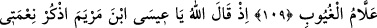
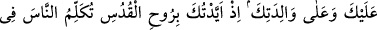
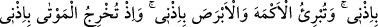
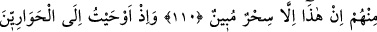
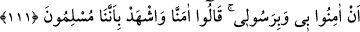

ALLAH’IN PEYGAMBERLERİ
HESABA ÇEKMESİ
109. Allah’ın peygamberleri toplayıp da “Size ne cevap verildi” dediği gün,
“Bizim hiçbir bilgimiz yok, şüphesiz gizlilikleri hakkıyle bilen ancak sensin”
diyeceklerdir.
110. Allah o zaman şöyle diyecek: “Ey Meryem oğlu Îsâ! Sana ve annene olan
nimetimi hatırla! Hani seni mukaddes ruh (cebrail) ile desteklemiştim; beşikte iken
de yetişkin çağında da insanlarla konuşuyordun. Sana Kitab’ı, hikmeti, Tevrat’ı ve
İncil’i öğretmiştim. Benim iznimle çamurdan, kuş şeklinde bir şey yapıyordun da
ona üflüyordun, hemen benim iznimle o bir kuş oluyordu. Yine benim iznimle
anadan doğma körü ve alacalıyı iyileştiriyordun. Ölüleri benim iznimle (diriltip
kabirden) çıkarıyordun. Hani İsrâiloğullarını (seni öldürmekten) engellemiştim;
kendilerine apaçık deliller (mûcizeler) getirdiğin zaman içlerinden inkâr edenler,
“Bu, apaçık bir sihirden başka bir şey değildir” demişlerdi.
111. Hani havârîlere, “Bana ve peygamberime îman edin” diye ilham etmiştim,
bildirmiştim. Onlar (da) “Îman ettik, bizim Allah’a teslim olmuş kimseler
(müslümanlar) olduğumuza sen de şâhit ol” demişlerdi.
“Allah’ın peygamberleri toplayıp da. Burada toplanacaklarla hem peygamberler,
hem de ümmetleri kastedilmiştir. Fakat ümmetleri zikredilmemiştir. Çünkü onlar
peygamberlerine tabidirler. “Size ne cevap verildi dediği gün” ki o gün kıyâmet
günüdür. Yani Allah Teâlâ, peygamberlerine şöyle sorar: “Siz onları benim tek bir ilah